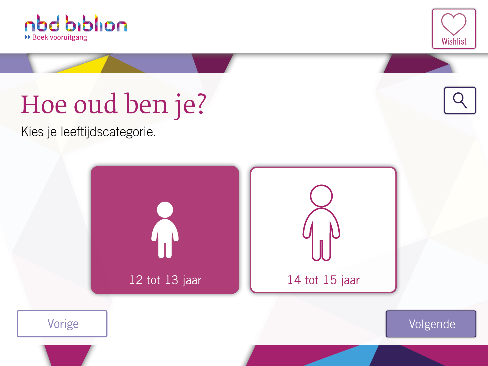
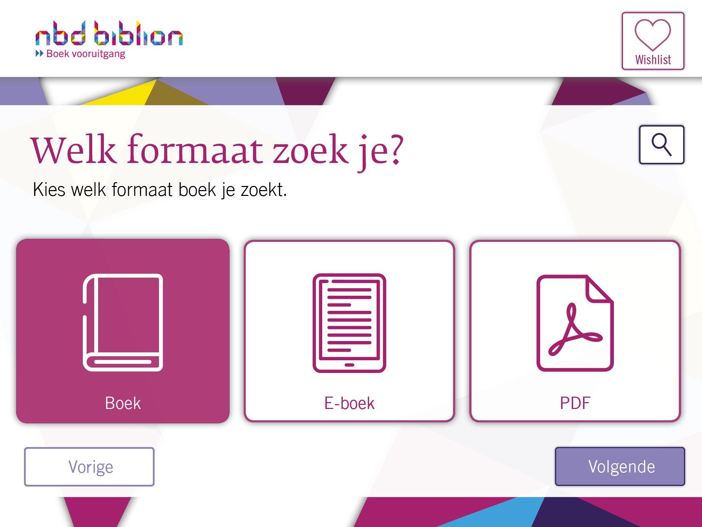
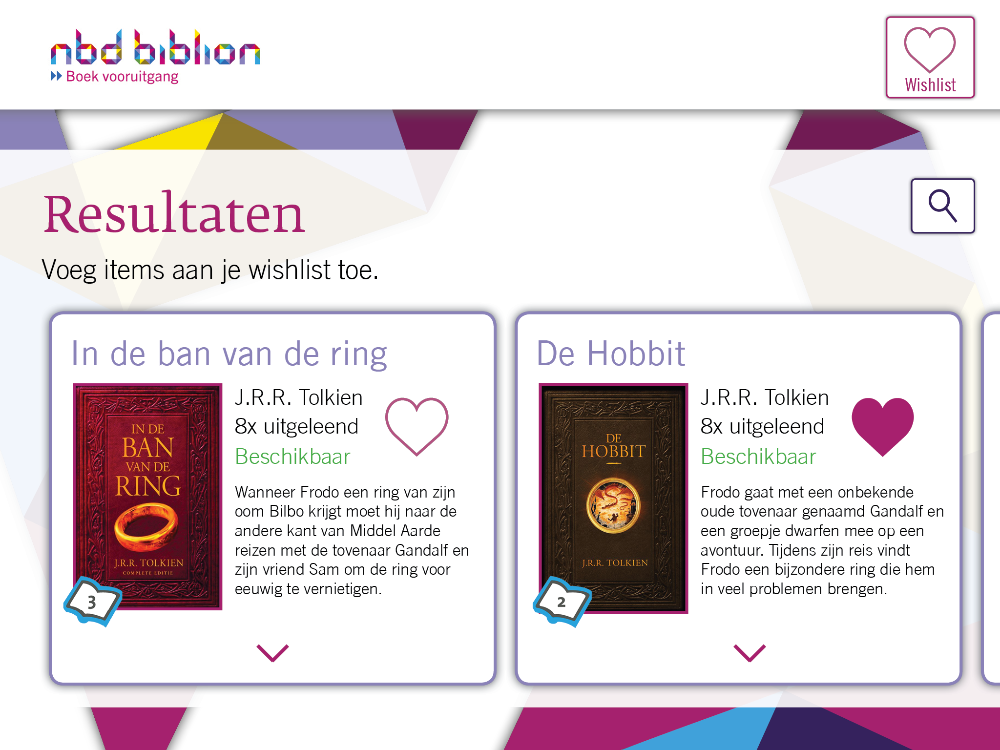
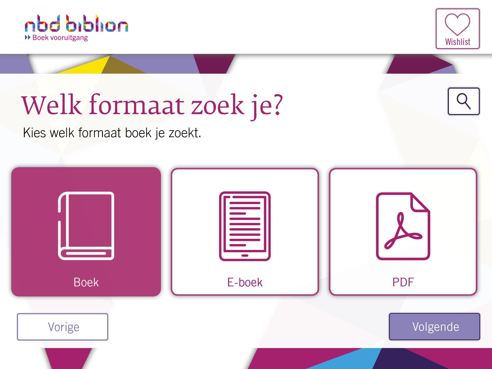
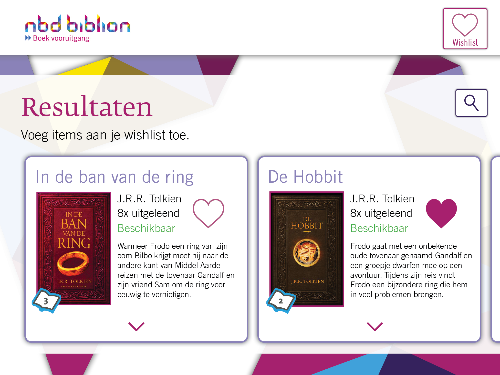
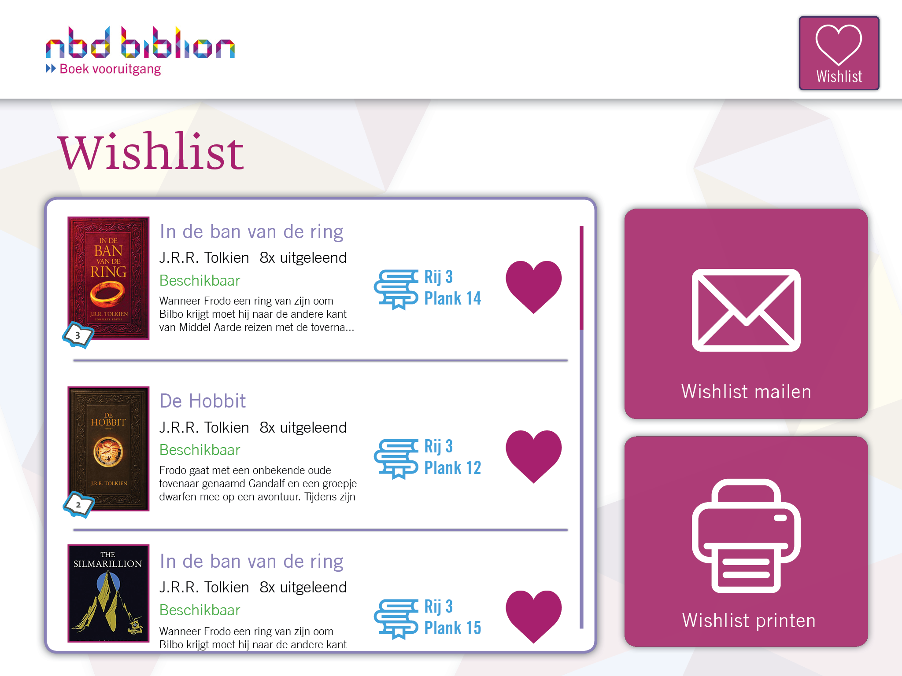
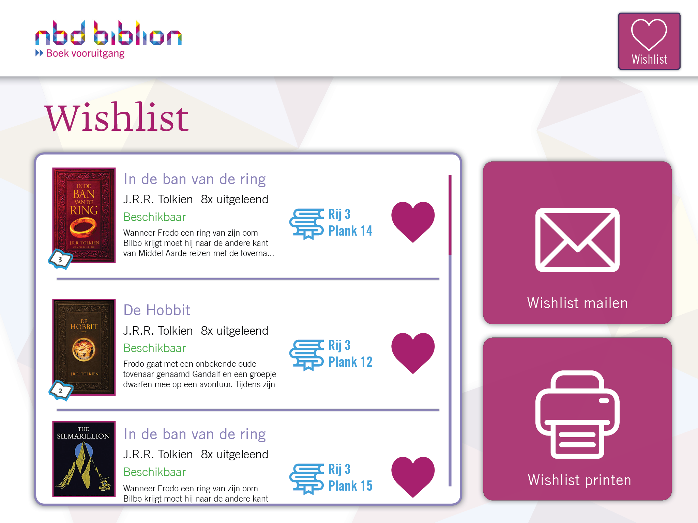

NBD Biblion
Voor het vak Visual Interface Design heb ik een boekenzoeker voor NBD Biblion gemaakt voor iPad, waarmee kinderen gemakkelijk boeken konden opzoeken in de bibliotheek. De focus van dit protoype lag vooral bij bewuste ontwerpkeuzes maken en het toepassen van bepaalde ontwerpprincipes, zodat de interface vanzelfsprekend en makkelijk in gebruik is.
De onderstaande afbeeldingen zijn de belangrijkste schermen uit het concept:
 



 
